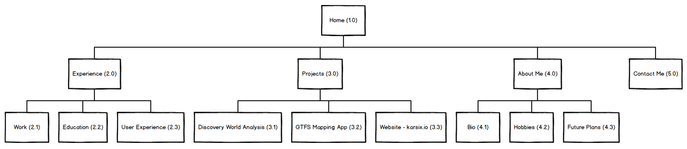
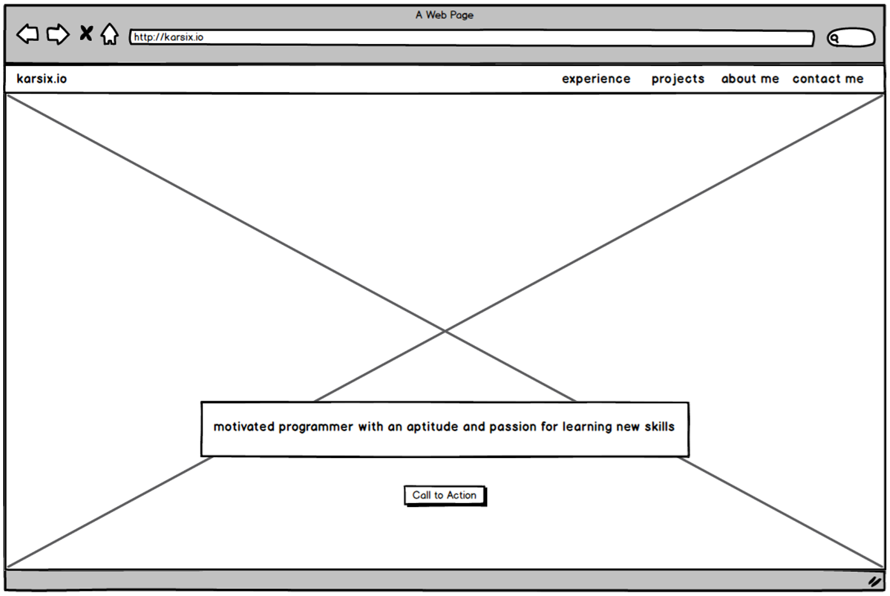
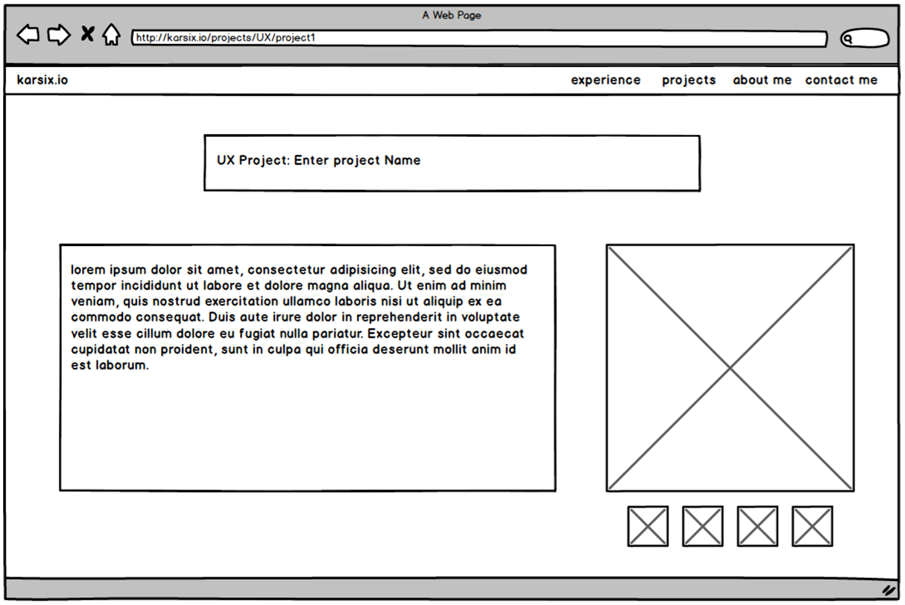

Karsix.io - What and Why
All of this websites code is on my GitHub!
It was meant to be a sandbox for me to work on my skills as a programmer, but it has turned into a website featuring info about me and my projects.
Towards the end of my 2019 Summer, I wanted to build an online portfolio to take the skills I had learned about Web Development and User Experience from my Freshman classes and put them to practical use. I went through many iterations of this website, in a few different frameworks, and what you are seeing is the culmination of those iterations!
I was toying around many domain names when I first started thinking about creating this website, many of which were related to my name. I decided that I wanted to completely rebrand myself and come up with a new username that I could use for my domain, and for my usernames. With some creative spark, and with the first initials of my whole name (k.a.r.) along with taking my favorite number (6), I came up with the karsix as a new username/domain name. I chose .io as my top level domain because it seemed “techy” and because it seemed to flow well with my domain.
Karsix.io - How did I go about with creating karsix.io?
I realized from my experience in the User Experience program at MSOE that I needed to plan out the website first instead of jumping into coding, to avoid mistakes and streamline the design process. With a little research, and a lot of design iterations, I created a site map and a few wireframes for this website that I thought looked great using Balsamiq.
I found Balsamiq a very quick and effective tool to use to create designs, when time is of the essence. I enjoyed using Balsamiq but wished that the tool allowed for more customizability with designs instead of having to use their preset elements. I found that I did not need to learn how to use the tool because of my experience with wireframing through another tool, Adobe XD. In Adobe XD, I had to create each design from scratch, but with Balsamiq, I could just search for an element, like a button, and just place it in, which made life a lot easier!
A site map is essentially a blueprint of the navigation of the website. It was necessary to come up with a site map so I could organize my page layout and know where all of the information was going.
The final iteration of the Site Map.
During the wireframing process I experienced a lot of difficulty with creating wireframes, because the ideas I had in my head were too complicated for my coding expertise and I also did not have the time to spend to learn these skills. I had to tone down my design to meet my skills while also creating a simple and visually appealing responsive site.
Below you will find two wireframes that I have created, the first being my homepage which I was able to code to match the wireframe perfectly. The second is a template for articles on my site, specifically it was meant for the Discovery World Article. In the end I could not match the exact placement of the elements in the wireframe due to it being much harder to make the site responsive if I had two columns, which is why I chose a simpler approach.
Regardless, I still decided to show the second wireframe because it shows how User Experience + Design is an iterative process that is continuous. Maybe someday I will be able to create my site to match that wireframe, but with my toolset right now, I have come up with what you are seeing on this site right now.
The wireframe for my homepage, which I matched in code.
The wireframe for the Discovery World project that I could not match in code.
Through the iterations of creating sitemaps and wireframes, I realized that this was just a design phrase. The idea of designing before solving can be used throughout industry, whether it be creating blueprints for a house or whiteboarding code prior to implementing it, designing can help any project and should always be a part of the project.
Design Rationale for Karsix.io
When it came to creating this website, I had a lot of options with how I could create it. I could have used a website builder, like Weebly or Squarespace to create a website or I could have downloaded a website template and edited it myself. I decided that I did not want to use either of these options and instead, I wanted to create a website from scratch using HTML, CSS and JS.
As a Computer Science student who loves learning new skills, I felt that I was up for the challenge and wanted to learn more about responsive design. Additionally, it seemed to be a fun project, that I could do in my free time while working and attending school, without taking too much of my time.
Also, anyone can create a website from a template, but I wanted to use this site as an example of my work ethic and an example of a project that I created in my free time. The idea was that it would be a selling point during interviews to show my skills, my hardwork and also provide the job recruiter with more information about me.
I predicted that the majority of the people who visited my website would likely come from either my LinkedIn, my resume, or from word of mouth, typically through a networking session. Hence I geared my site to be an extension of my resume to provide more details on my work experience, projects I am working on and more importantly, allow the visitors to get to know me a little more.
I also performed A/B testing on the homepage to determine which version of the page retained audience more and provided a less cognitive load (how much the user has to think to perform an action) on the user. A/B testing essentially is comparing two variations of a web page or app to see which variation hits the desired goal. In my case, I tested the home page with a button and without a button and found that the use of a call to action button significantly reduces the cognitive load of a user and thus retained more users. It may have been a small change in the UI that resulted from A/B testing, but the homepage gained a significant UX improvement.
I wanted to use the experience I have gained through my User Experience classes when I was designing this site, which is why I came up with motivations to keep the user engaged in my site and to learn more about me. I identified that the main motivations I wanted to express in my site was curiosity and affiliation. I wanted the visitor to see my projects and activities that I performed and possibly draw connections to projects and activities they perform in their free time, which is why I put such a big emphasis on my Experiences and Projects. I also wanted to promote curiosity in my website with the intent that the user wants to learn more about me and possibly reach out to me via my contact page.